uEngine WMS를 MCP 서버로 Process GPT에 연결해 재보충 프로세스를 실제 LLM 에이전트로 끝까지 실행하고, 에이전트 제안 검토와 감사 로그까지 확인합니다.
무엇을 · 왜#
WMS 앱의 쓰기 함수는 MCP 도구로도 호출할 수 있습니다. Process GPT의 BPMN 활동이 이 도구를 호출하면, 재고 확인이나 RFQ 생성 같은 반복 업무는 에이전트가 맡고 승인과 품질 판정은 사람이 합니다. 에이전트는 PROCESS_AGENT 계정으로 로그인하므로 사람과 똑같이 데이터베이스의 역할 검사를 받습니다. 품질 판정이나 제안 승인처럼 사람이 맡아야 하는 함수는 호출해도 거부됩니다.
먼저 알아 둘 것
- Process GPT와 LLM이 필요합니다. 재보충 프로세스의 에이전트 활동은 실제 LLM 호출입니다. 응답 문장은 실행마다 달라질 수 있습니다. 활동이 실패하면 다시 시도합니다.
- 설치 스크립트만으로는 끝까지 실행되지 않습니다. 이 튜토리얼은
fc82ea2의 스크립트와, 지금의 Process GPT 엔진에 맞춘 보정 스크립트를 함께 씁니다. 이유는 2단계에 설명했습니다. - Agent Decisions 화면의 제안은 LLM이 쓴 글이 아닙니다. 이 튜토리얼에서는 에이전트 계정으로 MCP 도구를 직접 호출해 넣었습니다. 제안을 작성하는 에이전트는 독자가 직접 만들어야 하며, 앱은 신호와 기록 도구, 사람 검토 화면을 제공합니다.
따라 하기#
앞 장의 설명대로 WMS(Supabase, 화면, MCP 서버 8199)가 실행 중이고, Process GPT 로컬 스택도 실행 중이어야 합니다. 설치 스크립트는 Process GPT의 테넌트 localhost와 데모 사용자 ID bd0e585b-3828-496c-92aa-3f93f336d3d3을 전제로 합니다. cd supabase && supabase db reset으로 처음 상태로 되돌린 뒤 시작합니다.
- MCP 도구 확인. 서버는 도구 83개를 제공합니다. 각 도구는 앱의 데이터베이스 함수를 호출합니다. 기본 신원은
PROCESS_AGENT, 설비 보고 도구는WCS_GATEWAY, 감사 로그 도구는AUDITOR입니다.curl -s -X POST http://127.0.0.1:8199/mcp \ -H 'content-type: application/json' -H 'accept: application/json, text/event-stream' \ -d '{"jsonrpc":"2.0","id":1,"method":"tools/list","params":{}}' | jq -r '.result.tools[].name' | wc -l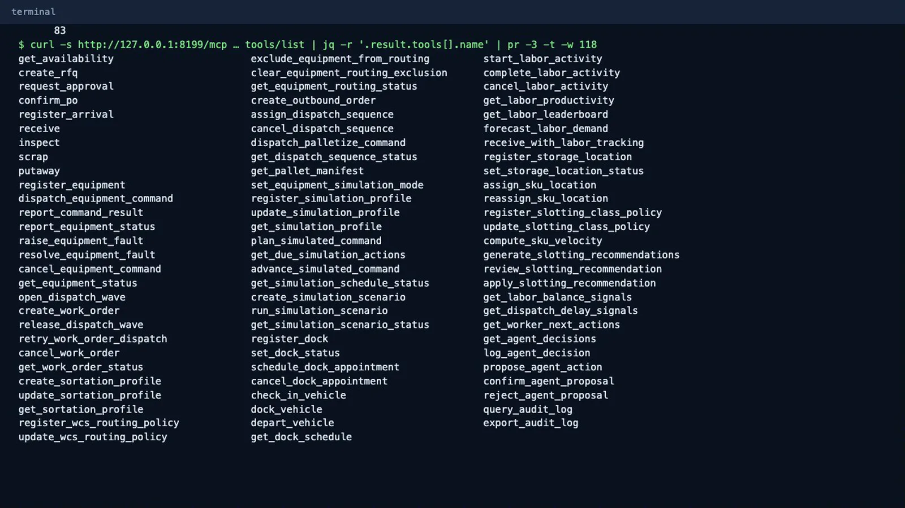
MCP 도구 목록 - 설치와 보정. 저장소 루트에서 설치 스크립트를 실행합니다. 인자의 기본값은
services/아래에 설치된 구성을 전제로 하므로 값을 직접 지정합니다.--env-file은SERVICE_ROLE_KEY가 있는 Process GPT의.env,--processgpt-url은 그 Supabase API입니다.--mcp-url은 Process GPT의 폴링 서비스에서 접근할 수 있는 주소입니다. 폴링 서비스가 컨테이너 안에서 실행되면http://host.docker.internal:8199/mcp, 호스트에서 실행되면 아래처럼 씁니다. 이어서patch_process.py를 실행합니다.보정 스크립트가 고치는 부분은 두 가지입니다. 승인 게이트웨이의 반려 분기가 종료 이벤트로 바로 가면, 엔진이 그 너머의 활동을 미리 만들지 않아 PO 확정 뒤에서 흐름이 멈춥니다. 그래서 반려 분기에 「발주 취소 확인」 활동을 추가합니다. 또 설치 스크립트는 폼의 화면 정의를 비워 두어 「자유입력」 칸만 보이므로, 필드 정의로 폼을 채웁니다.python3 scripts/install_processgpt_integration.py \ --env-file "$PGPT_ENV" --processgpt-url "$PGPT_API" --mcp-url http://127.0.0.1:8199/mcp SERVICE_ROLE_KEY=... python3 patch_process.py "$PGPT_API"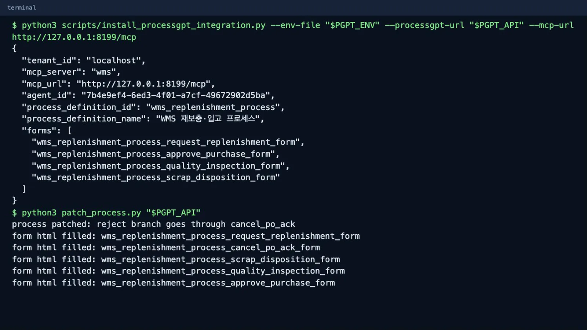
설치와 보정 - 에이전트 확인. Process GPT에
demo@localhost로 로그인해 왼쪽 에이전트 동료의 WMS 실행 에이전트를 엽니다. 도구 목록은wms하나입니다. 활동을 실행할 때의 모델은 이 화면이 아니라 Process GPT 폴링 서비스의LLM_MODEL설정을 따릅니다.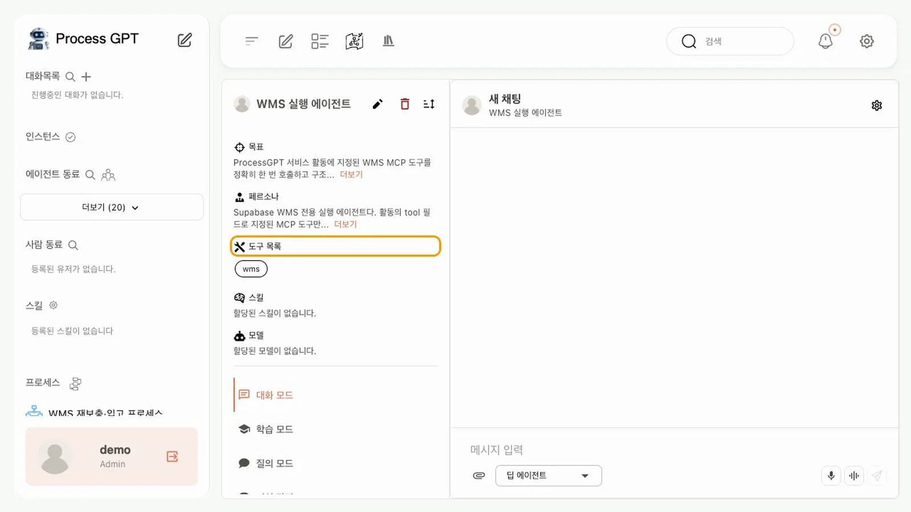
WMS 실행 에이전트 - 프로세스 보기. 프로세스 정의 체계도의 미분류에서 WMS 재보충·입고 프로세스를 엽니다. 시작, 발주 승인, 품질 검사가 사람 활동이고 나머지는 에이전트가 지정된 도구 하나를 호출하는 서비스 활동입니다.
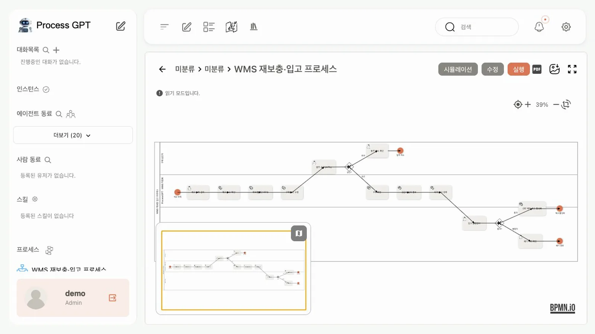
재보충 프로세스 - 실행. 실행을 누르면 역할별로 담당자가 지정됩니다. 폼에 상품 SKU
SKU-A-001, WMS 테넌트 ID10000000-0000-0000-0000-00000000000a, WMS 창고 ID20000000-0000-0000-0000-00000000000a, 권장 보충 수량170을 넣고 제출 완료를 누릅니다.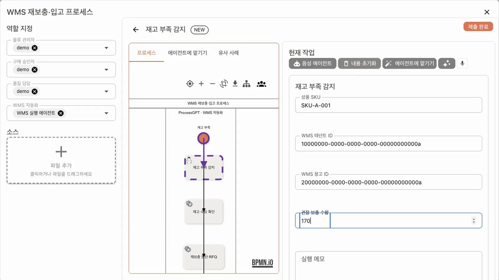
실행 폼 - 에이전트 활동 지켜보기. 인스턴스 화면의 칸반보드에서 재고·수요 확인, 재보충 판단·RFQ 생성, 구매 승인 요청이 차례로 완료됨으로 옮겨 갑니다. 이 환경에서는 세 활동이 끝나는 데 1분이 채 걸리지 않았습니다.

칸반보드 - 도구 결과 읽기. 서비스 활동의 화면에는 체크포인트만 보이므로, 결과는 활동 출력에서 읽습니다.
create_rfq의document_id가 다음 폼에 넣을 PO ID입니다.curl -s "$PGPT_API/rest/v1/todolist?proc_inst_id=eq.$INST&select=activity_id,status,output" \ -H "apikey: $SERVICE_ROLE_KEY" -H "Authorization: Bearer $SERVICE_ROLE_KEY" | jq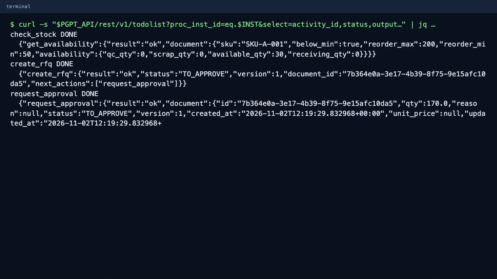
활동 출력 - WMS에서 승인. WMS에
approver-a@demo.local로 로그인합니다. Purchase Orders에SKU-A-001, 170,TO_APPROVE, Version 1이 있습니다. 만든 사람은process-agent-a@demo.local입니다. Approve를 누르면 Version 2가 됩니다.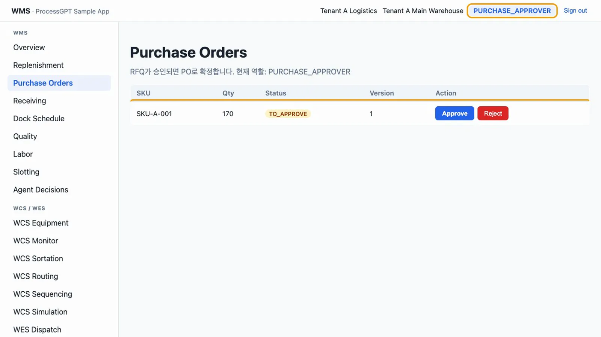
WMS 승인 - 발주 승인 폼 제출. Process GPT 칸반보드의 예정업무에서 발주 승인 (HITL)을 엽니다. 승인 결정
승인, WMS PO ID, 승인 후 WMS 문서 버전2를 넣고 제출 완료를 누릅니다. 에이전트는 이 값으로 PO를 확정합니다.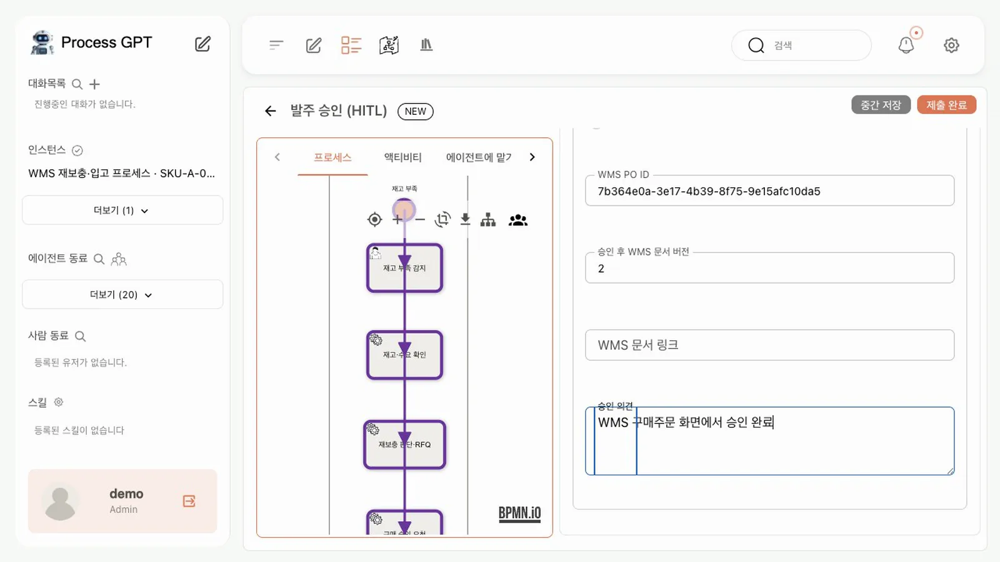
발주 승인 폼 - 에이전트 활동 재개. PO 확정(
confirm_po), 도착 등록(register_arrival), 입고(receive)가 이어집니다. WMS에inbound-a@demo.local로 로그인해 Receiving을 보면 170 / 170,QC_PENDING입니다.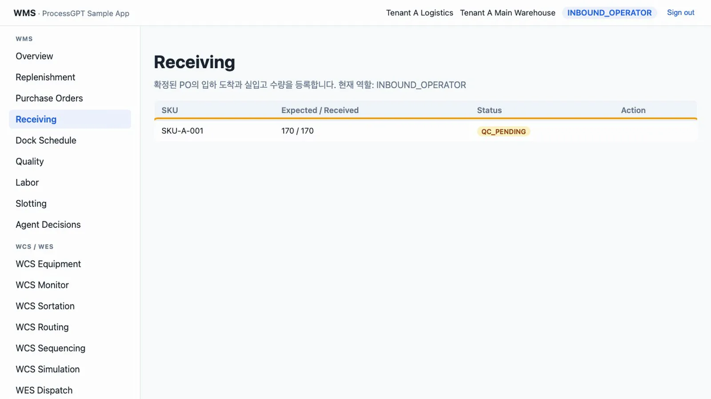
입고 뒤 Receiving - 품질 판정. 에이전트에게는 품질 판정 권한이 없습니다.
quality-a@demo.local로 로그인해 Quality에서 Pass를 누릅니다. Process GPT의 입고 품질검사 (HITL) 폼에 검사 결과합격, WMS Receipt ID(활동 출력의confirm_po→links.receipt_id), WMS 문서 버전을 넣고 제출합니다.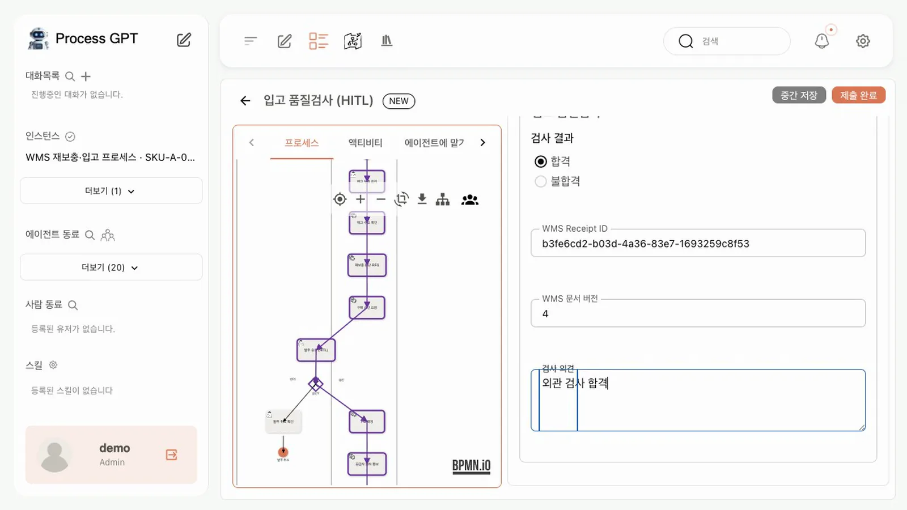
품질 폼 - 결과 확인. 에이전트가 적치(
putaway)를 끝내면 활동 출력에PUTAWAY_COMPLETED,AVAILABLE이 남습니다. WMS Overview의SKU-A-001은 Available 200,OK입니다. 인스턴스 표시는RUNNING으로 남고, 쓰지 않은 분기의 활동(발주 취소 확인, 폐기 처리 확인)은 예정업무에 남습니다. 현재 엔진은 서비스 활동으로 끝나는 경로를 종료하지 않습니다.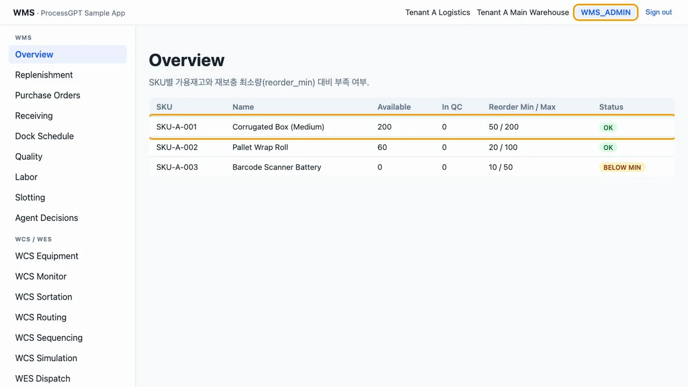
Overview 200 - 제안 넣기. 에이전트 계정으로 MCP 도구를 직접 호출합니다.
agent_tools.mjs는log_agent_decision한 건과propose_agent_action두 건을 호출합니다.WMS_CORR에 인스턴스 ID를 넘기면 감사 로그에서 연결됩니다.WMS_CORR="$INST" node agent_tools.mjs propose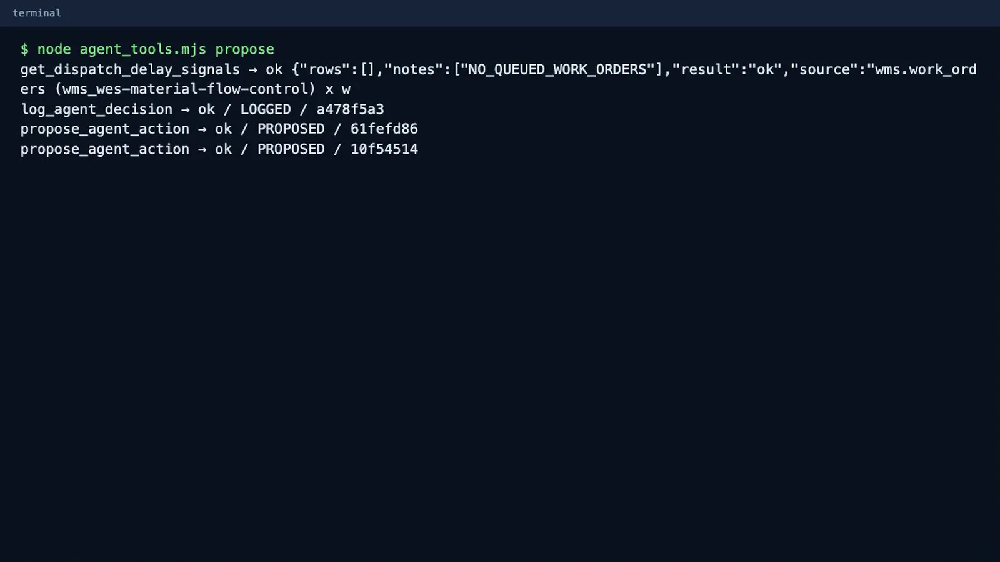
제안 넣기 - 제안 검토.
wh-manager-a@demo.local로 로그인해 Agent Decisions를 엽니다. 제안과 근거, 판단에 쓴 신호가 함께 보입니다. Confirm을 누르면 「자동 실행되지 않습니다」 안내가 나옵니다. 승인은 기록만 남기며, 실행은 사람이 따로 합니다. Reject는 사유가 없으면reason is required로 거부됩니다.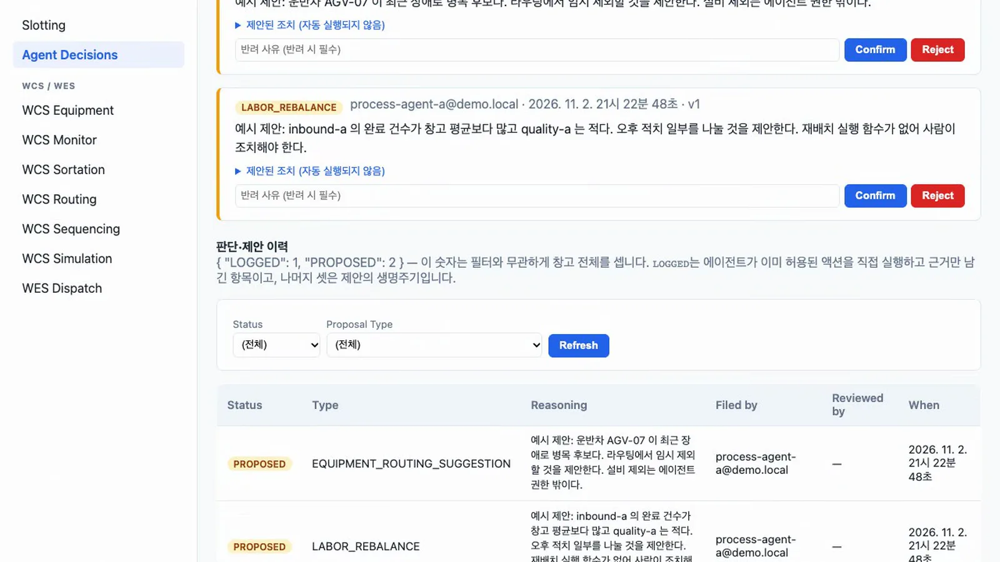
제안 검토 - 자기 승인 시도. 에이전트 계정으로 자기 제안을 승인하려 하면
FORBIDDEN오류가 반환됩니다.node agent_tools.mjs self-confirm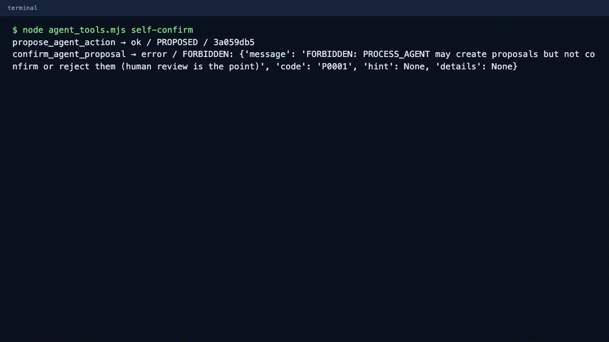
FORBIDDEN - 감사 로그.
auditor-a@demo.local로 로그인해 Audit Log를 엽니다. 행위자 칸에서process-agent-a@demo.local을 고르고 Search를 누르면 RFQ 생성, PO 확정, 도착, 입고, 적치가 문장으로 나옵니다. 상관관계 ID 칸에 인스턴스 ID를 넣어 찾으면 그 ID로 남긴 기록만 나옵니다. 설치된 프로세스는create_rfq에만 인스턴스 ID를 넘기므로 RFQ 행과 판단 기록이 나오고, RFQ 행에 판단 근거가 붙습니다.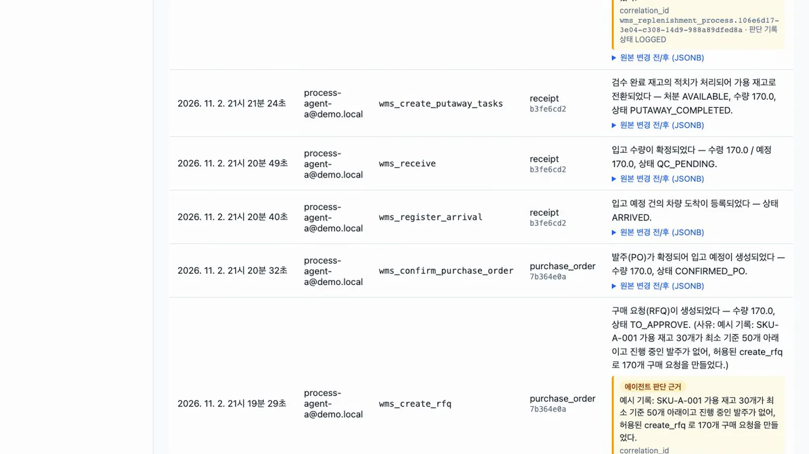
감사 로그
확인 문제#
에이전트가 품질 판정까지 하게 만들 수 있나요?
도구 허용 목록을 넓혀도 안 됩니다. 판정 함수는 QUALITY_INSPECTOR와 WMS_ADMIN 역할만 허용하므로 PROCESS_AGENT가 호출하면 FORBIDDEN입니다.
Agent Decisions에서 제안을 Confirm으로 승인하면 무엇이 바뀌나요?
제안의 상태와 승인자만 바뀝니다. 재고나 설비, 인력 데이터는 바뀌지 않으며, 실제 조치는 사람이 해당 화면에서 따로 합니다.
보정 스크립트 없이 설치하면 어디서 멈추나요?
발주 승인 폼이 「자유입력」 칸만 보여 승인 결정을 넣을 수 없습니다. API로 값을 넣어 넘어가도 PO 확정 뒤 다음 활동이 만들어지지 않아 멈춥니다.